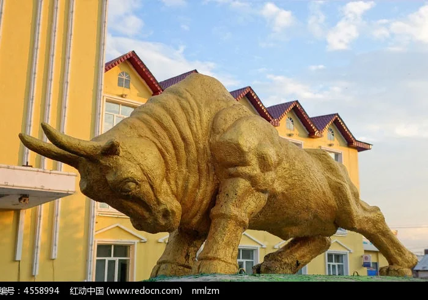
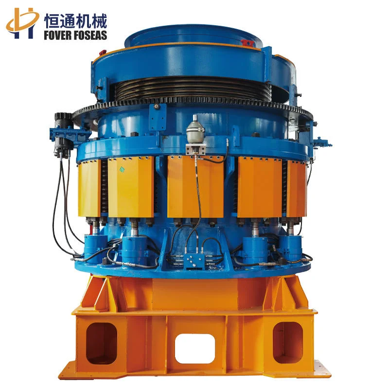
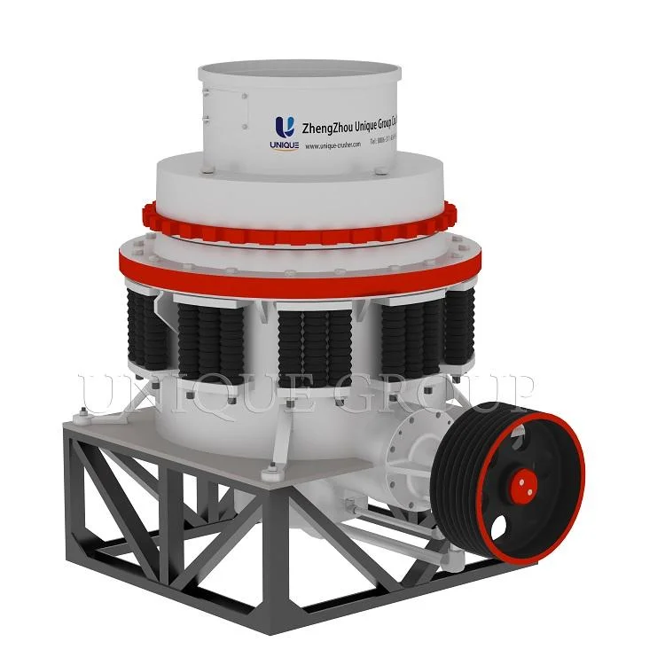
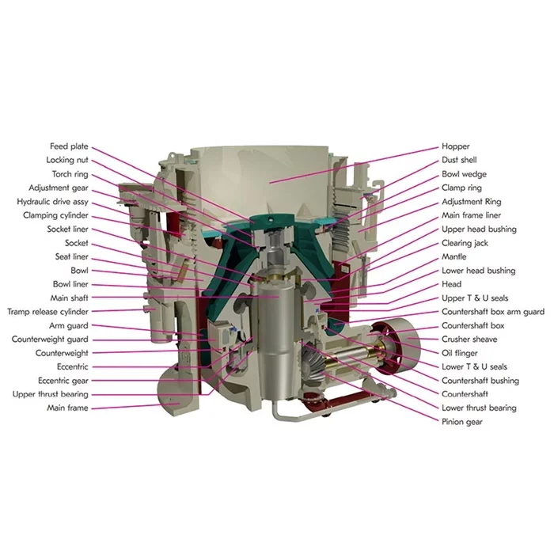

Maintenance Recommendations
每运行500小时检查破碎壁和轧臼壁磨损轮廓。磨损达到原始厚度的80%时更换。润滑系统每2,000小时换油。每月检查CSS并调整。





.webp)

.webp)
.webp)
| 型号 | 耐磨件 |
|---|---|
| 型号 | HP200-HP800, GP100-GP550, MP800-MP1250 |
| 处理能力 | 90-3,500 tph |
| 最大给料粒度 | Up to 350mm |
| 排料口范围 | 6-44mm |
| 功率 | 90-1,250 kW |
| 重量 | 5.8-120 t |
| 型号 | CR800, shah123 |
| 型号 | MJ 2010, Mo 325, SME 2006 |
| 材料牌号 | Mn22Cr2, Mn18Cr2, Mn13Cr2 |
| 型号 | gger 293 |
| 型号 | where original equipment accounts for only 20 |
| 型号 | Cr26, Mn13C |
| 材料牌号 | Mn13Cr2 |
| 型号 | gger 293, BITA 15 |
破碎壁和轧臼壁：铬钼合金钢（ASTM A532 IIIA）、Mn18Cr2高锰钢。可选：MMC陶瓷镶嵌增强，在高硅石工况下寿命延长3倍。
HP200-HP800, GP100-GP550, MP800-MP1250
轧臼壁、破碎壁、碗形瓦、给料锥
主要破碎面；偏心旋转与碗形壁对物料进行压缩破碎
| Grade | C | Si | Mn | Cr | Mo | Ni |
|---|---|---|---|---|---|---|
| Mn18Cr2 | 1.05-1.35 | ≤1.0 | 16.0-19.0 | 1.5-2.5 | — | — |
更高锰含量提供更深的加工硬化层；在高压缩工况下使用寿命比Mn13长20-30%
| Grade | C | Si | Mn | Cr | Mo | Ni |
|---|---|---|---|---|---|---|
| Mn22Cr2Mo | 1.10-1.40 | ≤1.0 | 20.0-24.0 | 1.5-2.5 | 0.30-0.60 | — |
超高锰+铬钼合金化；极端冲击工况下最大加工硬化深度；比Mn18寿命长30-50%
| Grade | C | Si | Mn | Cr | TiC | Mo |
|---|---|---|---|---|---|---|
| Mn18Cr2+TiC | 1.05-1.35 | ≤1.0 | 16.0-19.0 | 1.5-2.5 | 8-15 vol% | — |
Mn18基体中嵌入TiC陶瓷颗粒；磨蚀工况下耐磨寿命提升2-3倍；适用于硬岩圆锥破碎
固定破碎面；与轧臼壁共同构成破碎腔型；决定产品粒度分布
| Grade | C | Si | Mn | Cr | Mo | Ni |
|---|---|---|---|---|---|---|
| Mn18Cr2 | 1.05-1.35 | ≤1.0 | 16.0-19.0 | 1.5-2.5 | — | — |
更高锰含量提供更深的加工硬化层；在高压缩工况下使用寿命比Mn13长20-30%
| Grade | C | Si | Mn | Cr | Mo | Ni |
|---|---|---|---|---|---|---|
| Mn13Cr2 | 1.05-1.20 | ≤1.0 | 11.5-14.0 | 1.5-2.5 | — | — |
优异的加工硬化能力；在冲击载荷下表面硬度持续提升，适用于中高冲击破碎工况
将物料均匀分配至破碎腔，最大化衬板利用率并确保产品一致性
| Grade | C | Si | Mn | Cr | Mo | Ni |
|---|---|---|---|---|---|---|
| Mn13Cr2 | 1.05-1.20 | ≤1.0 | 11.5-14.0 | 1.5-2.5 | — | — |
优异的加工硬化能力；在冲击载荷下表面硬度持续提升，适用于中高冲击破碎工况
| Grade | C | Si | Mn | Cr | Mo | Ni |
|---|---|---|---|---|---|---|
| Cr-Mo Alloy Steel | 0.15-0.25 | 0.30-0.60 | 0.50-0.80 | 1.00-1.50 | 0.45-0.65 | — |
良好的硬韧性组合；适用于SAG磨机衬板、篦条和破碎机架体衬板的磨粒磨损工况
均匀分配物料到破碎腔，优化衬板磨损和产品粒度
| Grade | C | Si | Mn | Cr |
|---|---|---|---|---|
| Mn13Cr2 | 1.05-1.35 | ≤1.0 | 11.0-14.0 | 1.5-2.5 |
标准加工硬化钢；中等冲击工况的经济选择
| Grade | C | Si | Mn | Cr |
|---|---|---|---|---|
| Mn18Cr2 | 1.05-1.35 | ≤1.0 | 16.0-19.0 | 1.5-2.5 |
更深的加工硬化层；高压缩工况下比Mn13寿命长20-30%
偏心轴套和主轴套确保偏心旋转平稳，减少振动
| Grade | C | Si | Mn | Cr | Mo |
|---|---|---|---|---|---|
| AISI 4140 | 0.38-0.43 | 0.15-0.35 | 0.75-1.0 | 0.8-1.1 | 0.15-0.25 |
锻制高强度钢，用于轴、螺栓和高应力部件
每运行500小时检查破碎壁和轧臼壁磨损轮廓。磨损达到原始厚度的80%时更换。润滑系统每2,000小时换油。每月检查CSS并调整。